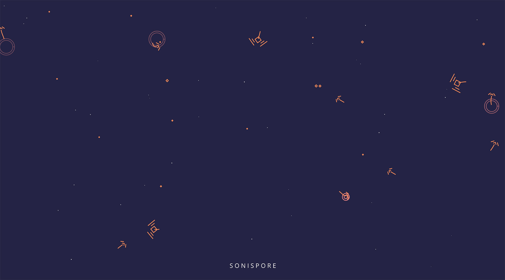

Introduction
What is a musical ecosystem?
We'll be creating a simple simulation of an ecosystem - a screen full of organisms which freely roam around, and interact with each other as they feed, breed and die. We will code their basic behaviours, and generate sound from their actions. We'll be using HTML5 Canvas to draw and animate the scene, and the Web Audio API to create our sounds.
Take a look at the live example to get an idea of what we'll be making. You'll see a scene of tiny spore organisms floating around, which are being eaten by two larger types of organism. The larger organisms feed to gain energy, and will breed with a partner once they have enough energy. If they run out of energy they die, releasing spores back into the ecosystem.
Getting Started
You'll need to download the project files below. For this workshop most of the basic page setup has been completed for you, so that we can focus on the more creative aspects.
About the Workshop
This workshop covers a few different topics, some or all of them may be new to you. Don't worry if they don't all sink in straight away or seem overwhelming! The workshop resources will stay online and I encourage you revisit them if needed. These pages link out to further reading on each topic, and unlike regular CodeBar tutorials where we encourage students to type out everything themselves - today is mainly about having fun making something, so feel free to copy/paste from the provided code!